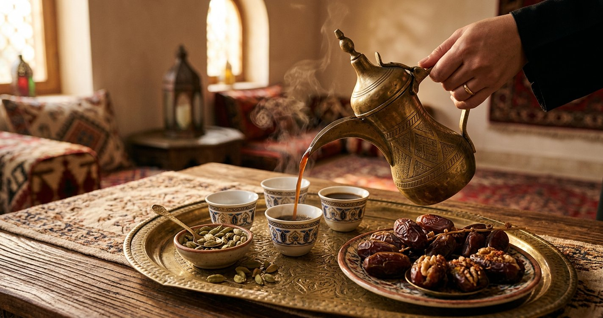

القهوة العربية على الطريقة المنزلية: دلة وهيل وخطوات
حضّر قهوة عربية خفيفة برائحة الهيل في بيتك: اختيار البن ودرجة التحميص، خطوات الدلة الهادئة، ضبط القوة، وتقديمها مع الحلويات.

الخلاصة السريعة
القهوة العربية مشروب بسيط لكنه يحتاج صبرًا: بن محمّص تحميصًا خفيفًا ومطحون ناعمًا جدًا، ماء بارد في الدلة، هيل (وزعفران اختياري)، وغليان هادئ لا عنيف. لا توجد وصفة «أصلية» واحدة؛ لكل منطقة وعائلة عاداتها في القوة والتحلية، فابدأ بنسبة معتدلة وعدّلها لذوقك.
البن والتحميص
القهوة العربية تميل إلى تحميص خفيف أو متوسط يحفظ حموضة البن ونكهته، بعكس التحميص الغامق الداكن. اشتري بنًا محمصًا حديثًا بكمية صغيرة تكفي أسبوعين، فالبحر يفقد عطره سريعًا بعد التحميص، واحفظه في وعاء محكم بعيدًا عن الضوء والحرارة والرطوبة. إن اشتريت بنًا أخضر وحمّصته في البيت فحمّص دفعات صغيرة وراقب اللون والرائحة عن قرب.
الطحن الناعم جدًا
الطحنة الصحيحة للقهوة العربية أدق من طحنة الإسبريسو: مسحوق ناعم كالدقيق تقريبًا، لأنه لا يُرشَّح بل يُترك ليستقر في القاع. الطحن الخشن يعطي قهوة خفيفة مائية، والطحن المبالغ فيه مع الغليان الطويل قد يعطي مرارة. إن طحنت في البيت فاطحن عند الحاجة؛ والقهوة المطحونة الجاهزة من محمصة موثوقة خيار مريح بشرط أن تكون مخصصة للعربية.
الدلة والفنجان
دلة نحاسية أو ستانلس ستيل متوسطة الحجم تكفي للبيت. الدلة النحاسية التقليدية جميلة وتوزع الحرارة جيدًا لكنها تحتاج تنظيفًا من الداخل بعد كل استخدام؛ والستانلس أسهل عناية. الفنجان العربي الصغير بلا عروة هو التقديم المعتاد، وفنجان زجاجي يكشف لون القهوة إن أردت.
خطوات التحضير
- املأ الدلة بالماء البارد بمقدار ما تريد فناجين، واترك مساحة للغليان.
- ضع الدلة على نار هادئة حتى يسخن الماء (لا يغلي بعنف).
- أضف البن المطحون الناعم مع التحريك: ملعقة صغيرة ممتلئة لكل فنجان تقريبًا، وعدّل لاحقًا.
- أضف الهيل: حبتان مهروستان خفيفًا، أو نصف ملعقة صغيرة هيل مطحون، حسب الذوق.
- اتركها تغلي غليانًا هادئًا 3 إلى 5 دقائق مع التقليب برفق حتى تظهر رغوة خفيفة.
- أطفئ النار واترك الدلة دقيقة كي يستقر الثفل في القاع.
- اسكب ببطء في الفناجين دون تقليب الثفل، وقدّم ساخنة.
ضبط القوة والرائحة
قهوتك أقوى من اللازم؟ زد الماء أو قلّل البن في الدفعة التالية. خفيفة جدًا؟ أضف قليلًا من البن، أو اترك الغليان دقيقة إضافية (دون إفراط كي لا تزداد المرارة). للهيل: الحب المهروس يعطي رائحة أنقى من المطحون الذي قد يعكر القهوة إن أُضيف بكثرة. الزعفران خيط أو اثنان يضيف لونًا ورائحة في المناسبات، وإضافته اختيارية تمامًا.
التحلية: سكر أم لا؟
في بعض المناطق تُقدم القهوة بلا سكر مع التمر أو الحلوى، وفي أخرى يُضاف السكر أثناء التحضير أو في الفنجان حسب طلب الضيف. إن أردت تحلية الدلة كلها فذوّب السكر مع الماء قبل الغليان أو أضفه مع البن، وجرّب مقدارًا خفيفًا أولًا؛ يمكن دائمًا تقديم سكر منفصل لمن يريد.
التقديم والضيافة
تُقدّم القهوة العربية في فناجين صغيرة مملوءة إلى الثلثين تقريبًا، ومعها التمر أو الشوكولاتة أو الحلوى الجافة في المناسبات. من عادات الضيافة المتوارثة ألا يُترك الفنجان فارغًا أمام الضيف؛ يُعاد ملؤه إن رغب أو يُرفع بإشارة لطيفة. قدّم القهوة ساخنة طازجة، ولا تعيد تسخين ما تبقى في الدلة مرارًا فتزداد مرارته.
حفظ البن والقهوة
البن المطحون يفقد عطره أسرع من الحب، لذا اطحن كميات صغيرة. خزّن البن في وعاء محكم الإغلاق في مكان بارد مظلم، وتجنب الثلاجة إن كانت رطبة أو مكشوفة الروائح (الحب المحمص يمتص الروائح). بقايا القهوة في الدلة تُرمى ولا تُحفظ؛ حضّر ما يكفي الجلسة.
ملاحظة عن الكافيين
القهوة العربية تحتوي كافيين كأي قهوة، وإن كان الفنجان صغيرًا فالتكرار المتعدد يضيف كمية. من يوصيه طبيبه بتقليل الكافيين، أو من لاحظ اضطراب النوم أو الخفقان بعد القهوة، فليخفف الكمية أو يختار بنًا منزوع الكافيين إن توفّر، وليستشر طبيبه في حالاته الخاصة (الحمل والأدوية المتفاعلة مع الكافيين مثلًا).
أسئلة شائعة
لماذا قهوتي عكرة أو كثيفة الثفل؟
غالبًا الطحن أخشن من اللازم أو حركت الدلة أثناء السكب؛ اتركها تستقر أطول، واسكب من فوق دون هز.
هل أضيف الحليب؟
القهوة العربية تُشرب سادة تقليديًا، والحليب ليس جزءًا من طريقتها؛ جرّبها سادة أولًا ثم قرر.
كم مرة يغلي البن؟
غليان هادئ واحد كافٍ؛ الغلي المتكرر يزيد المرارة ويفقد الرائحة.
أخطاء شائعة في القهوة العربية
طحن خشن فيعطي قهوة مائية. غليان عنيف يفيض ويجعل القهوة مرة. هيل مطحون بكثرة يطغى على البن. تحلية الدلة كلها ثم اكتشاف أن الضيف لا يشرب السكر. ترك البن المطحون أسابيع فيفقد عطره. سكب الثفل بهز الدلة. ابدأ بنسبة بسيطة، راقب الغليان، وعدّل الدفعة التالية؛ القهوة العربية تتقن بالتكرار لا بالوصفة المكتوبة وحدها.
الخلاصة
بن خفيف التحميص مطحون ناعمًا، ماء بارد، هيل، وغليان هادئ في دلة نظيفة، ثم سكب بطيء فوق الثفل المستقر. اضبط القوة والتحلية لبيتك، وقدّمها طازجة مع التمر أو الحلوى، وستجد أن أجمل فنجان هو الذي تعتاد عليه أنت.